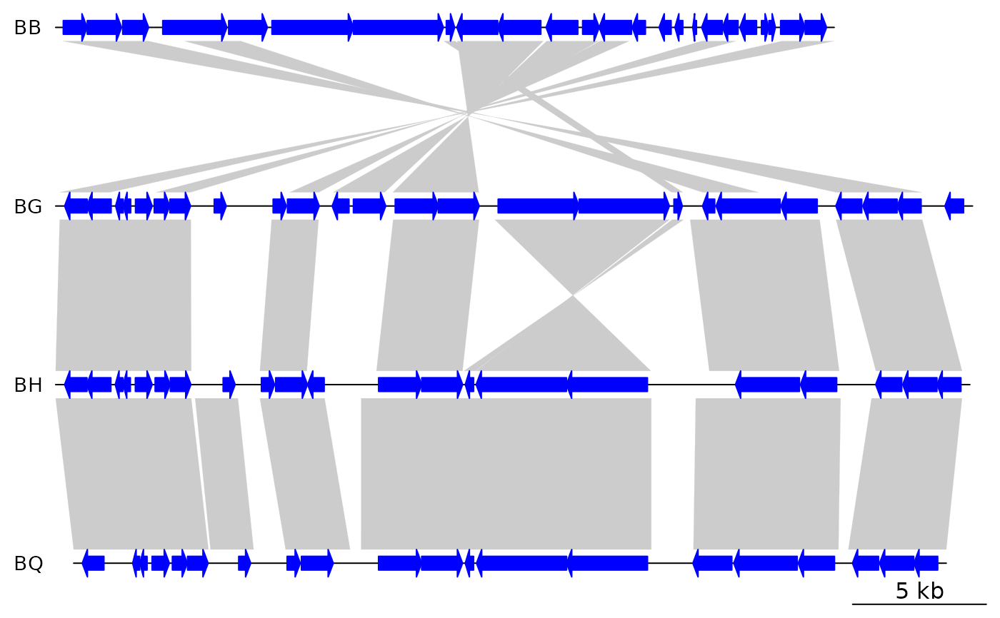

Trimming data frames using a numeric interval
trim.RdTrims data frames with 2 or more numeric columns using a numeric interval.
Returns rows with numeric values that fall within the interval.
Usage
trim(x, ...)
# Default S3 method
trim(x, xlim = NULL, ...)
# S3 method for class 'dna_seg'
trim(x, xlim = NULL, ...)
# S3 method for class 'comparison'
trim(x, xlim1 = c(-Inf, Inf), xlim2 = c(-Inf, Inf), ...)
# S3 method for class 'annotation'
trim(x, xlim = NULL, ...)
# S3 method for class 'seg_plot'
trim(x, xlim = NULL, ...)Arguments
- x
An object to trim, generally a
data.frame,data.table, orseg_plotobject- ...
Unused.
- xlim
A
numericof length 2. In a general case, the rows whose values are included in this interval are returned- xlim1
A
numericof length 2, used only forcomparisonobjects, the interval to filter the first side.- xlim2
A
numericof length 2, used only forcomparisonobjects, the interval to filter the second side.
Value
An object with the same type as x, with the rows (or subset)
corresponding to the given interval
Details
By default it uses the first 2 numeric columns in x.
If x is a dna_seg object, it uses the start and end columns.
If x is a comparison object, it filters using the start1 and end1
columns with the xlim1 argument, and start2 and end2 with the xlim2
argument.
If x is annotation object, it uses the x1 and x2 columns.
If x is a seg_plot object, the function uses the xargs variable from
x to define which vectors determine the x position (they should be the
same length). Then, all the variables (including those inside the gp
variable) that are the same length as the x vectors are trimmed, so that only
the rows for which the x values are inside the xlim argument are kept.
Examples
## Load
data(barto)
xlim_ref <- c(10000, 45000)
## Seg 2 (ref)
barto$dna_segs[[2]] <- trim(barto$dna_segs[[2]], xlim = xlim_ref)
## Seg 1
barto$comparisons[[1]] <- trim(barto$comparisons[[1]], xlim2 = xlim_ref)
xlim1 <- range(barto$comparisons[[1]], overall = FALSE)$xlim1
barto$dna_segs[[1]] <- trim(barto$dna_segs[[1]], xlim = xlim1)
## Seg 3
barto$comparisons[[2]] <- trim(barto$comparisons[[2]], xlim1 = xlim_ref)
xlim3 <- range(barto$comparisons[[2]], overall = FALSE)$xlim2
barto$dna_segs[[3]] <- trim(barto$dna_segs[[3]], xlim = xlim3)
## Seg 4
barto$comparisons[[3]] <- trim(barto$comparisons[[3]], xlim1 = xlim3)
xlim4 <- range(barto$comparisons[[3]], overall = FALSE)$xlim2
barto$dna_segs[[4]] <- trim(barto$dna_segs[[4]], xlim = xlim4)
## Plot
plot_gene_map(barto$dna_segs, barto$comparisons)

## With seg_plot
x <- 1:20
y <- rnorm(20)
sp <- seg_plot(func = pointsGrob,
args = list(x = x, y = y, gp = gpar(col = 1:20, cex = 1:3)))
## Trim
sp_trim <- trim(sp, c(3, 10))
str(sp_trim)
#> List of 5
#> $ func :function (x = stats::runif(10), y = stats::runif(10), pch = 1, size = unit(1,
#> "char"), default.units = "native", name = NULL, gp = gpar(), vp = NULL)
#> $ args :List of 4
#> ..$ x : int [1:8] 3 4 5 6 7 8 9 10
#> ..$ y : num [1:8] 1.1269 0.1399 0.1003 -1.2045 -0.0835 ...
#> ..$ gp :List of 2
#> .. ..$ col: int [1:8] 3 4 5 6 7 8 9 10
#> .. ..$ cex: num [1:3] 1 2 3
#> .. ..- attr(*, "class")= chr "gpar"
#> ..$ default.units: chr "native"
#> $ xargs: chr [1:5] "x" "x0" "x1" "x2" ...
#> $ yargs: chr [1:5] "y" "y0" "y1" "y2" ...
#> $ ylim : NULL
#> - attr(*, "class")= chr [1:2] "seg_plot" "list"
range(sp_trim$arg$x)
#> [1] 3 10